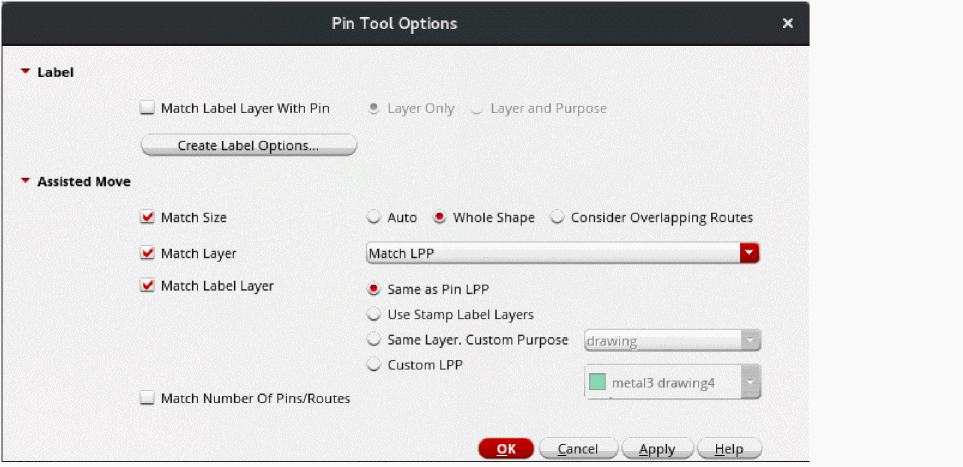

Setting Pin Tool Options
(Virtuoso Layout Suite EXL and higher tiers) The Pin Tool Options form lets you specify the settings that to be applied when running all assisted move commands using the Pin Tool.
-
Choose Plan – Pin Planning – Pin Tool.
The Pin Browser of the Pin Tool appears. -
Select Tools – Options. The
Pin Tool Options form appears.
 - In the Label section, select Match Label Layer With Pin to update the pin label layer whenever the parent pin is moved to a different layer.
- Select one of the following options:
- Click Create Label Options to display the Set Pin Label Text Style form. Use the options in this form to specify label text settings.
- Select Match Size in the Assisted Move section to specify whether the pins being moved are to be resized to match the reference shapes.
- Select a pin resize option: Auto, Whole Shape, or Consider Overlapping Routes.
- Select Match Layer to specify the LPP to which the pin is to be moved. If this option is not selected, the pin remains on its current LPP. You can select one of the following options: Match LPP, Match Layer Only, or Match Purpose Only.
- Select Match Label Layer to specify the LPP to which the pin labels are to be moved. If this option is not selected, the labels remains on their current LPPs. Select one of the following options: Same as Pin LPP, Use Stamp Label Layers, Same Layer, Custom Purpose, or Custom LPP.
- Select Match Number Of Pins to specify that the number of pins being moved should be matched to the number of reference pins.
- Click OK to apply the settings and close the form.
The settings made through this form are applicable when you move pins using the assisted move command in the Pin Browser.
Related Topics
Repositioning Pins Using Assisted Move
Return to top